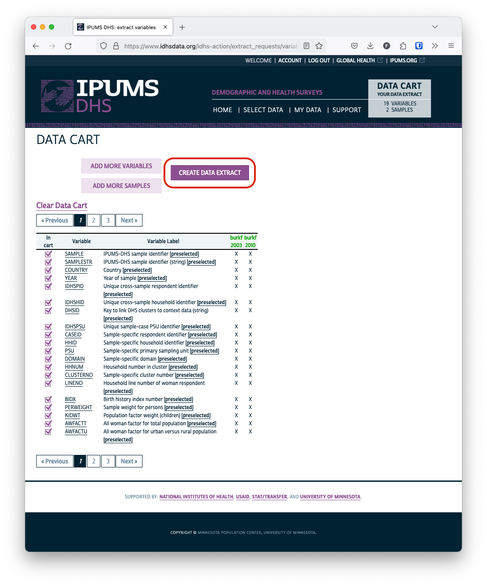
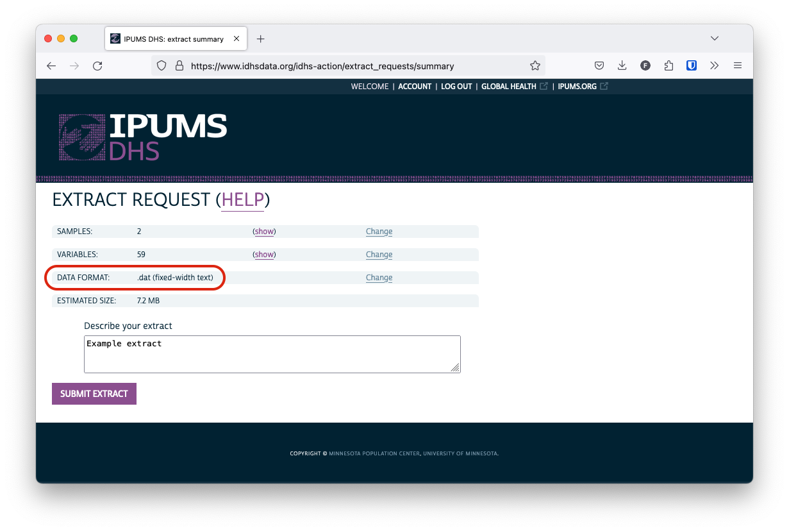
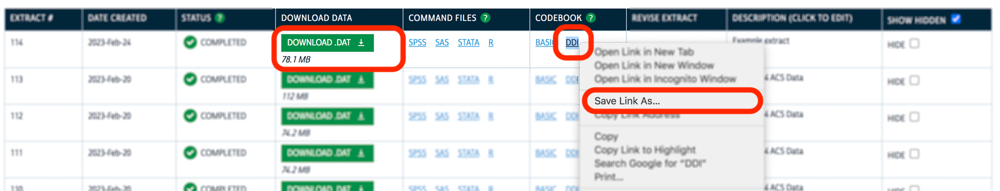

install.packages("ipumsr")The Demographic and Health Surveys Program (DHS) is the leading source of population health data for low- and middle-income countries around the world. IPUMS DHS disseminates a harmonized version of the DHS survey results in which variables are integrated across time and space, facilitating comparative and longitudinal analysis. Furthermore, IPUMS DHS provides a web interface and streamlined documentation to make the data discovery and download process easier.
Accessing the data
To obtain access to IPUMS DHS data, you must first request data access from the DHS Program. Once you’ve done so, you can use your username and password from DHS to log in to IPUMS DHS.
Browse data
Users can browse the available data using the IPUMS DHS data selection interface, which includes sample and variable availability, descriptions, codes, and more.
For more information about how to use the interface, see the IPUMS DHS user guide.
Select data
Once you’ve selected the samples and variables you want to include in your data extract, click View Cart to review your selections. If you’re satisfied with the contents of your extract, click Create Data Extract.

IPUMS DHS allows you to select one of several output file formats. On this blog, we will use the default fixed-width (.dat) file option, which is the format expected by the data-reading functions provided in ipumsr.

Click Submit Extract to submit your extract for processing on the IPUMS servers. You’ll receive an email when your extract is complete and ready to download.
Download data
Click the green download button to download the compressed data file for your extract.
You will also need to download an associated metadata (DDI) file. This is an XML file that contains parsing instructions for the fixed-width data file as well as descriptive information about the variables contained in an extract.
DDI stands for Data Documentation Initiative, an international standard for documenting data obtained in survey research.
You can do so by right clicking the DDI link and selecting Save link as….

Tip
The specific text included in the dropdown may differ based on the browser that you are using. For instance, Safari displays the option Download Linked File As….
The important thing is that you download the DDI file in .xml format, not .html format.
Load IPUMS DHS data into R
The ipumsr package provides the tools you’ll need to easily load your extract into R.

© IPUMS (MPL-2.0)
If you haven’t previously installed the package, you can do so with:
To load your data, use read_ipums_micro(). If your data file and DDI file are in the same directory, you can load the data by providing only the DDI file path. To be safe, we typically provide the path to both files.
Note that you’ll need to adjust the file paths to reflect the location of the files on your local system.
library(ipumsr)
dhs <- read_ipums_micro(
ddi = "data/dhs/idhs_00015.xml",
data_file = "data/dhs/idhs_00015.dat.gz",
)
#> Use of data from IPUMS DHS is subject to conditions including that users should cite the data appropriately. Use command `ipums_conditions()` for more details.You should now have a tabular data source loaded into R:
dhs
#> # A tibble: 25,689 × 59
#> SAMPLE SAMPLESTR COUNTRY YEAR IDHSPID IDHSHID DHSID IDHSPSU CASEID
#> <int+lbl> <chr+lbl> <int+lbl> <int> <chr> <chr> <chr> <dbl> <chr>
#> 1 85403 [Burki… 854… [Bur… 854 [Bur… 2003 85403 … 85403 … BF20… 8.54e10 1 76 …
#> 2 85403 [Burki… 854… [Bur… 854 [Bur… 2003 85403 … 85403 … BF20… 8.54e10 1 76 …
#> 3 85403 [Burki… 854… [Bur… 854 [Bur… 2003 85403 … 85403 … BF20… 8.54e10 1 76 …
#> 4 85403 [Burki… 854… [Bur… 854 [Bur… 2003 85403 … 85403 … BF20… 8.54e10 1 98 …
#> 5 85403 [Burki… 854… [Bur… 854 [Bur… 2003 85403 … 85403 … BF20… 8.54e10 1 98 …
#> 6 85403 [Burki… 854… [Bur… 854 [Bur… 2003 85403 … 85403 … BF20… 8.54e10 1113 …
#> 7 85403 [Burki… 854… [Bur… 854 [Bur… 2003 85403 … 85403 … BF20… 8.54e10 1207 …
#> 8 85403 [Burki… 854… [Bur… 854 [Bur… 2003 85403 … 85403 … BF20… 8.54e10 1207 …
#> 9 85403 [Burki… 854… [Bur… 854 [Bur… 2003 85403 … 85403 … BF20… 8.54e10 1232 …
#> 10 85403 [Burki… 854… [Bur… 854 [Bur… 2003 85403 … 85403 … BF20… 8.54e10 1232 …
#> # ℹ 25,679 more rows
#> # ℹ 50 more variables: HHID <chr>, PSU <dbl>, DOMAIN <dbl>, HHNUM <dbl>,
#> # CLUSTERNO <dbl>, LINENO <int>, BIDX <int>, PERWEIGHT <dbl>, KIDWT <dbl>,
#> # AWFACTT <dbl>, AWFACTU <dbl>, AWFACTR <dbl>, AWFACTE <dbl>, AWFACTW <dbl>,
#> # DVWEIGHT <dbl>, INTYEAR <int>, MONTHINT <int+lbl>, INTDAY <int>,
#> # INTDATECMC <dbl>, URBAN <int+lbl>, RESIDEINTYR <int+lbl>,
#> # GEO_BF2003_2010 <int+lbl>, GEO_BF2003 <int+lbl>, GEO_BF2010 <int+lbl>, …Why use ipumsr?
Several R packages already exist for reading external data files. There are a few reasons we suggest using ipumsr to work with IPUMS data.
Load compressed files
First, IPUMS delivers data extracts as compressed archives. ipumsr anticipates this and allows you to load data directly without having to manually decompress these files.
View variable metadata
Furthermore, ipumsr uses the metadata contained in an extract’s DDI file to attach contextual information to the loaded data. For instance, to get a description of a variable contained in an extract, use ipums_var_label():
ipums_var_label(dhs$HWHAZWHO)
#> [1] "Height for age standard deviations from median (WHO)"Use ipums_val_labels() to check if there are any labeled values in the data for that variable. Labeled values typically represent categories (for non-continuous variables) or contain information about the codes used for missing values.
For HWHAZWHO, several values represent different types of missing data. (You will likely want to convert these values to NA before conducting an analysis using this variable!)
ipums_val_labels(dhs$HWHAZWHO)
#> # A tibble: 5 × 2
#> val lbl
#> <int> <chr>
#> 1 9995 Height out of plausible limits
#> 2 9996 Age in days out of plausible limits
#> 3 9997 Flagged cases
#> 4 9998 Missing
#> 5 9999 NIU (not in universe)More details about working with IPUMS metadata can be found in the ipumsr documentation.
Access the IPUMS API
Finally, ipumsr provides an R interface for the IPUMS API, allowing you to request and download data entirely within your R environment. While these features do not currently support IPUMS DHS, work on the API is ongoing, so you may be able to access IPUMS DHS data in the future! To see more about the projects that are currently supported by the IPUMS API, check out the API documentation.
See the API introduction to learn how to use ipumsr to interact with the IPUMS API.
Getting Help
Questions or comments? Check out the IPUMS User Forum or reach out to IPUMS User Support at ipums@umn.edu.